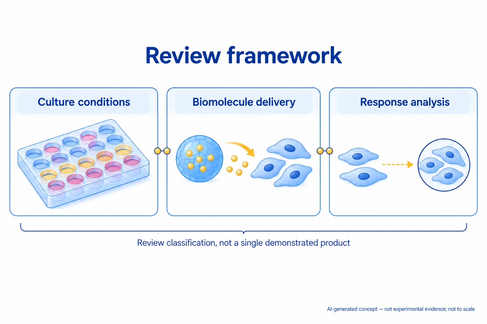

연구 배경과 분류
세포–재료 상호작용의 스크리닝 기반 리뷰다. 본문에서 이식형 스크리닝은 미래 방향이며 실증 결과가 아니다.
경계 분류: 탐색을 위해 가장 가까운 주제를 배정했습니다. 분류 근거와 교차 연관을 함께 읽어야 하며, 주 테마만으로 연구 범위를 한정할 수 없습니다. 기초 연구의 분류는 직접적인 바이오전자 응용을 입증하지 않습니다.
연구 개요와 핵심 성과
세포–재료 환경, 생체분자 전달, 세포 분비물 분석의 고속 스크리닝을 함께 정리한 리뷰다.
배양 조건 조합부터 반응 판독까지 통합해서 볼 틀을 제공한다.

AI 생성 비축척 개념도: 고속 세포 스크리닝 종설에서 배양 조건, 생체분자 전달, 세포 응답 분석의 상보적 분류를 보여 줍니다. 세 모듈과 연결선은 개념적 연구 역할을 나타내며, 통합 실증 장비나 자동화 제품, 실제 실험 과정·결과를 재현하지 않습니다. 세포·입자의 개수와 색상, 화살표 및 간격은 측정값·조성·시간 순서·성능을 뜻하지 않습니다. 실험 증거가 아닙니다.
근거와 생략 조건은 위 캡션에 명시했습니다.
논문 원그림을 복제한 이미지가 아니며, 원그림 재사용 허가를 의미하지 않습니다.
공개 근거 범위의 개념으로 웹 ChatGPT에서 생성하고 독립적으로 개념 검토했습니다. 전체 논문 본문·보충자료 검증을 뜻하지 않습니다. 표시용 WebP 인코딩만 적용했으며 자르기·크기 변경·내용 편집은 하지 않았습니다.
남은 과제
본문은 다중 조건 검증과 배양·분석 플랫폼 연결 부족을 지적한다.
비교 조건
2D·3D 환경, 세포 출처, 생체분자, 판독 지표와 실제 분석 시간을 구분한다.
관련 외부 연구
Nanoliter-scale synthesis of arrayed biomaterials and application to human embryonic stem cells
나노리터 재료 배열에서 인간 배아줄기세포와 재료의 상호작용을 병렬 검사한 구체적 선행 사례다.
PubMed 초록 확인. 단일 배열 실험을 2D·3D·분비물 분석 전체를 포괄하는 리뷰와 처리량으로 순위화하지 않는다.
초록 확인교신저자 확인
서정목 비교신 확인아래는 서정목의 교신저자 여부에 관한 확인 기록입니다. 저자 순서나 별표만으로 판정하지 않으며, 본문 내용 검증과 별도로 읽어야 합니다.
- 교신 고지 확인 출처 ↗
Correspondence should be addressed to: Eben Alsberg and Ali Khademhosseini
Author information / author notes / corresponding authors · publisher_or_PMC_article
- 본문 확인 범위
- 기존 해설은 PMC 공개 저자 원고의 초록·도입·선택된 분석 절·결론을 읽었다. 출판사 최종본 전체 대조는 미완료다. 이번의 그림·교신 항목 열람만으로 전체 심화 완료를 판정하지 않습니다.
- 남은 확인
- 학교 Chrome에서 최종 출판본과 특정 비교에 사용할 원 논문의 방법·통계를 대조한다. 기존 해설은 PMC 공개 저자 원고의 초록·도입·선택된 분석 절·결론을 읽었다. 출판사 최종본 전체 대조는 미완료다. 이번의 그림·교신 항목 열람만으로 전체 심화 완료를 판정하지 않습니다.
COVERAGE & OUTREACH
보도와 소개
논문과의 연관성을 확인한 소개 자료입니다. 언론 게재는 독립 취재나 실험 결과의 추가 검증을 뜻하지 않습니다.
이번 검색 범위에서 본문 대조를 마친 관련 소개 링크를 찾지 못했습니다. 관련 자료가 없다는 뜻은 아닙니다.
101편의 채널별 조사 범위와 검색 기록 →근거와 확인 범위
PMC 공개 저자 원고의 초록·도입·선택된 분석 절·결론을 읽었다. 출판사 최종본 전체 대조는 미완료다.
- 원본 공개 논문 목록 ↗ · #41 · 2026-10-03
- Crossref metadata ↗: Crossref에 등록된 공개 서지 메타데이터만 확인했습니다. 출판사 페이지·초록·본문을 읽었다는 뜻이 아니며, 학교 Chrome 전문 검증은 보류입니다. license_urls는 등록된 링크 목록이며 본문·그림 재배포 허가를 의미하지 않습니다. TDM 또는 게시 정책 링크가 포함될 수 있습니다.
- PMC public author manuscript ↗
public_full_text_selected_sections · Abstract; 1 Introduction; 4.2–4.3 analytical-platform discussion; 5 Conclusions; read 2026-10-03 - Public access attempt ↗
access_attempt_failed · HTTP 403 Forbidden; checked 2026-10-03; no paper content inferred